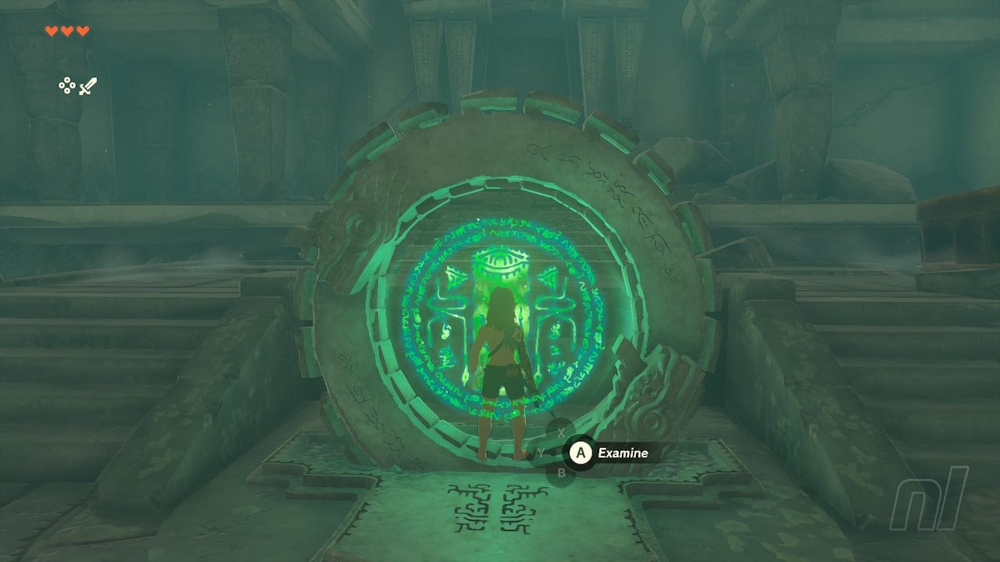
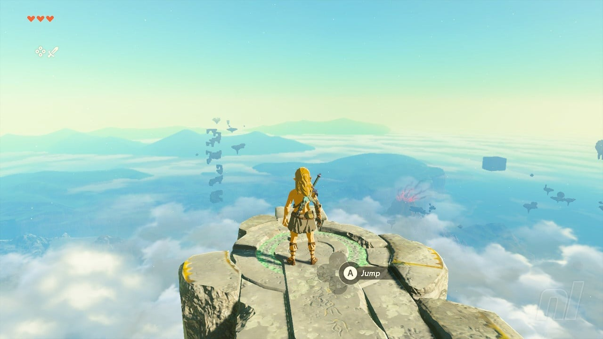
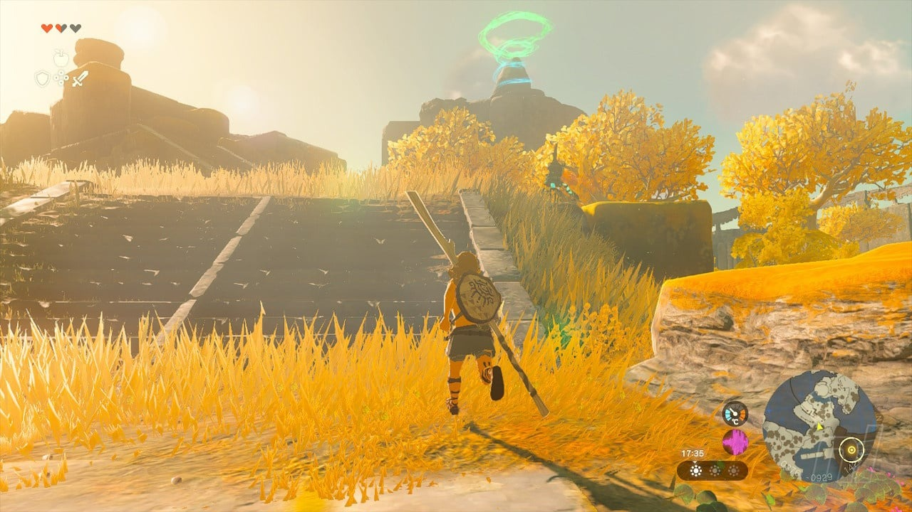
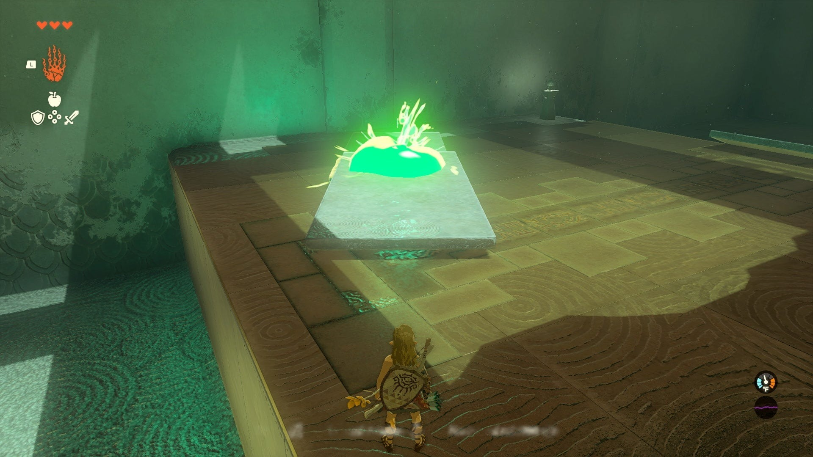

The Legend Of Zelda: Tears Of The Kingdom - How To Complete The Great Sky Islands
The Great Sky Islands serve as the hub area for the Sky Kingdom and contain the Temple Of Time. This area provides a tutorial for Link's new abilities and mechanics.
To The Temple Of Time
- After Link wakes up, proceed through the chamber until you reach the outside.
- Head directly towards the Temple Of Time, despite potential encounters with hostiles.
- Once you reach the Temple, a cutscene will play, informing you about the objective.
- Reach and enter the Ukouh Shrine, located to the left of the Temple.
- Complete the Shrine test, utilizing the Move ability. Refer here for the full shrine guide.
  
In-isa Shrine
- From the first Shrine, continue counterclockwise around the Great Sky Island.
- Navigate past enemy Soldiers and Archers to reach a wide river that needs crossing.
- Use the surrounding logs to construct a raft, attaching one of the sails found on the ground.
- Place the raft in the water and cross the river.
- Climb the nearby rocks to access the Gutanbac Shrine. Refer here for the full shrine guide.

Gutanbac Shrine
- This Shrine is located at the top of a snowy peak.
- Proceed counterclockwise from the previous Shrine.
- Climb the stone archway, taking breaks when necessary.
- Bring the platform to bridge the gap between the archway and the snowy ground.
- Ascend the snowy path through a cave, watching out for Like-Likes.
- Upon exiting the cave, the Shrine will be visible on top of the peak.
- Use the ladder to climb up, enter the Shrine, and complete the platforming challenge. Refer here for the full shrine guide.
Return To The Temple
- With all three Shrines completed, Link's arm will gain sufficient power to enter the Temple Of Time.
- Return to the Temple and proceed inside to witness a vision of Zelda.
- Zelda will grant Link a special ability and lead him to a sealed door.
- This door requires literal strength to open, which you currently lack.
- Proceed to the Nachoyah Shrine, located in [specific location].
- Use Recall to climb the turbines in the Shrine, following the path to reach the chamber.
- Complete the Shrine challenge using the provided guide.
- Exit through the nearby opening and return to the Temple Of Time.
Finishing the Tutorial
- Approach the Goddess Statues in the Temple Of Time.
- Spend the Light Orbs obtained from the Shrines on a new Heart Container.
- Use your increased health to open the sealed door.
- Finish the tutorial section.